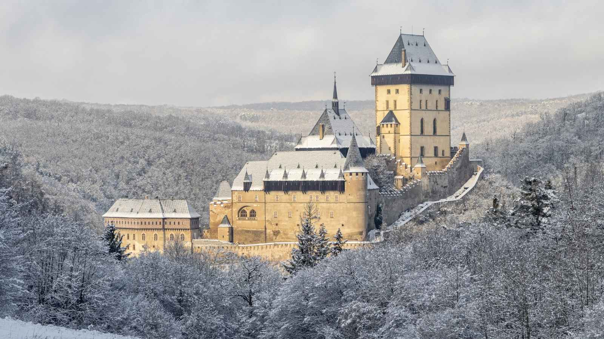

La huida
Final: Más allá de Verona
Antes del amanecer, Romeo y Julieta cruzan las puertas de la ciudad. Tras un largo viaje llegan al castillo de Karlštejn. Sus torres se elevan sobre un bosque cubierto de nieve, lejos de los muros de Verona y de la enemistad de sus familias. Allí, por primera vez, pueden imaginar un futuro que no depende de sus apellidos.

El amor sobrevive, aunque Verona todavía no haya aprendido a perdonar.